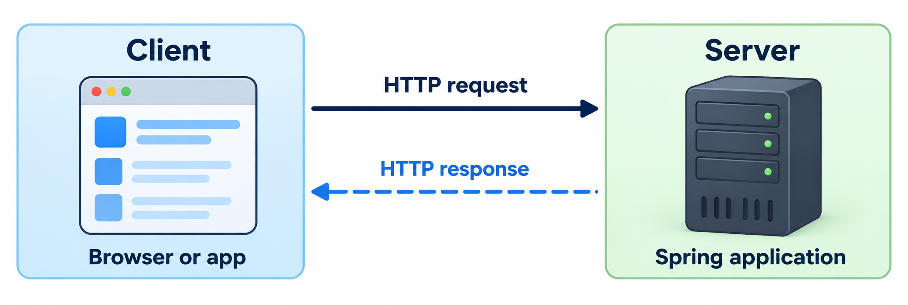

Roadmap
How can a browser use our Task List application?
See how a client talks to a running server.
Read a web address and an HTTP exchange.
Choose URLs and methods for a Task List API.
Connect HTTP requests to Java methods.
Read and validate the client's input.
Try the application and test its responses.
What Is HTTP?
HTTP stands for Hypertext Transfer Protocol.
It defines how programs exchange requests and responses.
Client: a program that sends a request.
Server: a running program that handles the request.
A browser is one kind of client.
The client and server can run on the same computer.
Same Service, New Input
An HTTP request becomes another way to call the Task List Service.

JavaFX: button click → TaskController → TaskModel → TaskService
Web: HTTP request → TaskApiController ─────────→ TaskServiceReuse the entity and Repository.
Add lookup and filtering methods to the Service.
Keep task rules and transactions in the Service.
A Web Address
A URL is the address that a client requests.
http://localhost:8080/api/tasks| Part | Meaning in this example |
|---|---|
| Protocol: use HTTP. |
| Host: this computer. |
| Port: where our server listens. |
| Path: which data we want. |
Run
WebAppas a Java application first.Enter this URL in the browser's address bar.
GETasks the server to send back data.Example:
WebApp.java
Reading an HTTP Request
The first line and headers follow HTTP/1.1 text rules.
GET /api/tasks HTTP/1.1
Host: localhost:8080
First line: read the method, path, and HTTP version.
Headers: each line uses
Name: valuesyntax.Host:
localhost:8080names the host and port.Blank line: ends the headers.
Body: this GET request has none.
Reading an HTTP Response
Read the status first, then the headers and body.
HTTP/1.1 200 OK
Content-Type: application/json
[]First line:
200 OKmeans the request succeeded.Header:
Content-Typesays the body uses JSON.Blank line: separates the headers from the body.
Body:
[]is an empty JSON array.Whole message: HTTP structure with a JSON body.
HTTP Methods
The method describes the requested operation.
| Method | Meaning | Task List example |
|---|---|---|
| Read data | List tasks or read one |
| Submit data | Create a task |
| Create or replace | Not implemented here |
| Apply a partial change | Set the done field |
| Remove a resource | Delete a task |
GET must not request a change to task data.
Sending Data with POST
A request body carries data from the client to the server.
POST /api/tasks HTTP/1.1
Host: localhost:8080
Content-Type: application/json
{"title": "Review REST"}POSTasks this API to create a task.The body supplies the title as JSON.
Content-Typetells the server how to read the body.Example:
CreateTaskDemo.java
Content-Type and Accept
Headers can describe data formats.
| Header | Meaning |
|---|---|
| This message's body is JSON. |
| The client asks for a JSON response. |
A POST with JSON sets
Content-Type.A GET can send
Acceptwithout a request body.The response has its own
Content-Type.
Status Codes
A status code tells the client how the request ended.
| Code | Meaning |
|---|---|
| The request succeeded. |
| The server created a resource. |
| Success with no response body. |
| The request contains a problem. |
| The requested resource was not found. |
| An unexpected server error occurred. |
2xx: success.4xx: a problem with the request.5xx: a problem on the server.
REST Resources and Representations
A web API is a set of operations other programs can call.
REST: a style for organizing web APIs around resources.
Resource: something the API manages, such as a task.
URL: identifies a resource, such as
/api/tasks/4.Representation: resource data, such as JSON.
HTTP method: describes the requested operation.
Stateful and Stateless Requests
Here, state means information about a client's ongoing interaction.
| Stateful | Stateless |
|---|---|
The server remembers conversation details between requests. |
Each request supplies the context needed to understand it. |
|
1. Select task 4. 2. Show the selected task. |
The request names the task directly. |
REST uses stateless requests.
Task data can still persist in the database.
Resource URLs and HTTP Methods
Use resource names in URLs.
| Avoid | Prefer |
|---|---|
|
|
|
|
|
|
/api/tasksidentifies the collection./api/tasks/4identifies one task.
JSON Represents a Resource
JSON carries the task's data across the network.
{
"id": 4,
"title": "Review REST",
"done": false
}One task is an object inside
{ }.The fields are
id,title, anddone.A list of tasks is an array inside
[ ].
The Task List API
Write the API contract before writing the controller.
| Method | URL | Meaning | Success |
|---|---|---|---|
|
| List tasks |
|
|
| Read one task |
|
|
| Create a task |
|
|
| Set done |
|
|
| Delete a task |
|
Replace {id} with an actual id, such as 4.
Check: Choose the Method and URL
Choose the method and URL for each task.
-
Show task 7.
GET /api/tasks/7 -
Add a new task.
POST /api/tasks -
Remove task 7.
DELETE /api/tasks/7 -
Why is
GET /api/tasks/7/deletea poor choice?GET must not request deletion.
Use
DELETE /api/tasks/7.
Spring Web Adds an HTTP Server
The web starter adds HTTP support to the Boot application.
<dependency>
<groupId>org.springframework.boot</groupId>
<artifactId>spring-boot-starter-web</artifactId>
</dependency>The starter supplies Tomcat, an HTTP server.
The server listens for requests on port
8080.Run
WebAppand leave it running.Example:
WebApp.java
The Web Controller
The web controller calls the Task List Service.
@RestController
@RequestMapping("/api/tasks")
public class TaskApiController {
private final TaskService service;
public TaskApiController(TaskService service) {
this.service = service;
}
}@RestControllerwrites return values into response bodies.@RequestMappingsets the shared URL path.Spring injects
TaskServicethrough the constructor.Example:
TaskApiController.java
Response Records
A response record defines the public JSON fields.
public record TaskItemResponse(
Long id, String title, boolean done) {
public static TaskItemResponse from(TaskItem item) {
return new TaskItemResponse(
item.getId(), item.getTitle(), item.isDone());
}
}The entity represents stored data.
The response record selects what clients can see.
Jackson converts the response record to JSON.
Example:
TaskItemResponse.java
GET All Tasks
An endpoint is an operation reached through an HTTP method and URL.
@GetMapping
public List<TaskItemResponse> findAll() {
return service.findAllTaskItems().stream()
.map(TaskItemResponse::from)
.toList();
}http://localhost:8080/api/tasks
[{"id":1,"title":"Review REST","done":false}]@GetMappingconnectsGET /api/tasksto this method.Open the URL in a browser to see the JSON.
Spring returns
200 OK.Example:
TaskApiController.java
How a Request Reaches a Method
Routing means choosing Java code for an incoming request.
HTTP request
→ Tomcat
→ DispatcherServlet
→ TaskApiController.findAll()
→ return value → Jackson → JSON responseTomcat accepts the HTTP request.
DispatcherServletselects the mapped controller method.Jackson converts the returned data to JSON.
Recall
Answer from memory before we continue.
Which method creates a task?
POST.What does
404mean? The resource was not found.What converts a response record to JSON? Jackson.
Where Request Data Goes
Requests can carry input in different places.
| Part | Example | Purpose |
|---|---|---|
Path |
| Identify task 4. |
Query parameter |
| Filter the task list. |
Body |
| Supply new task data. |
A query parameter is a name and value after
?.A body carries data inside the request message.
Spring annotations tell Spring where to read each value.
Path Variables: One Task
@PathVariable reads a value from the URL path.
@GetMapping("/{id}")
public TaskItemResponse findOne(@PathVariable Long id) {
return TaskItemResponse.from(service.getTaskItem(id));
}GET /api/tasks/4callsfindOne(4L).Spring converts
"4"to aLong.An invalid id format produces
400 Bad Request.We map a missing task to
404in the error section.Example:
TaskApiController.java
Query Parameters: Filter Tasks
@RequestParam reads a query parameter from the URL.
@GetMapping
public List<TaskItemResponse> findAll(
@RequestParam(required = false) Boolean done) {
List<TaskItem> items = (done == null)
? service.findAllTaskItems()
: service.findTaskItemsByDone(done);
return items.stream().map(TaskItemResponse::from).toList();
}/api/tasks:doneis null, so return all tasks./api/tasks?done=false: return unfinished tasks.Booleandistinguishes a missing value fromfalse.Example:
TaskApiController.java
Request Body: Create a Task
@RequestBody reads JSON into a Java record.
public record CreateTaskRequest(String title) { }@PostMapping
public TaskItemResponse create(
@RequestBody CreateTaskRequest request) {
return TaskItemResponse.from(service.addTaskItem(request.title()));
}The client sends
{"title": "Review REST"}.Jackson maps the
titlekey to the record component.Spring returns
200 OK.Example:
CreateTaskRequest.java
201 Created and Location
ResponseEntity controls the status, headers, and body.
@PostMapping
public ResponseEntity<TaskItemResponse> create(
@RequestBody CreateTaskRequest request) {
TaskItem saved = service.addTaskItem(request.title());
URI location = URI.create("/api/tasks/" + saved.getId());
return ResponseEntity.created(location)
.body(TaskItemResponse.from(saved));
}created(location)sets status201.Locationgives the new task's URL.The body contains the created task.
Example:
TaskApiController.java
Validate the Request Body
Add constraints and activate validation.
public record CreateTaskRequest(
@NotBlank @Size(max = 100) String title) { }
// Add @Valid to the create method parameter:
@Valid @RequestBody CreateTaskRequest request@NotBlankrejects missing, empty, and whitespace-only titles.@Size(max = 100)limits the title length.@Validactivates validation before the method body runs.Add
spring-boot-starter-validationto the project.Example:
CreateTaskRequest.java
PATCH: Mark a Task Done
Change the done field and return 204 No Content.
public record UpdateTaskRequest(
@NotNull Boolean done) { }@PatchMapping("/{id}")
@ResponseStatus(HttpStatus.NO_CONTENT)
public void update(@PathVariable Long id,
@Valid @RequestBody UpdateTaskRequest request) {
service.setDone(id, request.done());
}@ResponseStatussets the response status to204.A missing
donevalue becomesnullinBoolean.@NotNullrejects it with400.Example:
UpdateTaskRequest.java
DELETE: Remove a Task
Read the id from the path and call the Service.
@DeleteMapping("/{id}")
@ResponseStatus(HttpStatus.NO_CONTENT)
public void delete(@PathVariable Long id) {
service.deleteTaskItem(id);
}A successful delete returns
204.The response has no body.
The Service throws
TaskNotFoundExceptionfor a missing task.Example:
TaskApiController.java
A Missing Resource
Use a specific exception for a missing task.
public class TaskNotFoundException extends RuntimeException {
public TaskNotFoundException(Long id) {
super("Task item " + id + " not found");
}
}The exception describes a task problem.
It contains no HTTP annotations.
The web layer will map it to
404.Example:
TaskNotFoundException.java
Look Up a Task in the Service
The Service decides what a missing row means.
@Transactional(readOnly = true)
public TaskItem getTaskItem(Long id) {
return repository.findById(id)
.orElseThrow(() -> new TaskNotFoundException(id));
}findByIdreturns anOptional.orElseThrowhandles an empty result.Read, update, and delete use the same exception type.
Example:
TaskService.java
The Error Response
Handled errors use a consistent JSON shape.
public record ApiError(int status, String message) { }HTTP/1.1 404 Not Found
Content-Type: application/json
{"status": 404, "message": "Task item 42 not found"}Programs can check the status code.
People can read the message.
Validation and binding errors use the same two fields.
Example:
ApiError.java
Map a Domain Error to HTTP
@RestControllerAdvice handles errors across REST controllers.
@RestControllerAdvice
public class ApiExceptionHandler {
@ExceptionHandler(TaskNotFoundException.class)
@ResponseStatus(HttpStatus.NOT_FOUND)
public ApiError notFound(TaskNotFoundException exception) {
return new ApiError(404, exception.getMessage());
}
}@ExceptionHandlerselects the exception type.@ResponseStatussets status404.The returned
ApiErrorbecomes JSON.Example:
ApiExceptionHandler.java
Map Invalid Input to HTTP
Add a validation handler to the same advice class.
@ExceptionHandler(MethodArgumentNotValidException.class)
@ResponseStatus(HttpStatus.BAD_REQUEST)
public ApiError invalidBody() {
return new ApiError(400, "Invalid task fields");
}Invalid POST titles reach this handler.
A missing PATCH
donefield reaches it too.Other handlers map malformed JSON and invalid parameters to
400.Unexpected server failures remain server errors.
Example:
ApiExceptionHandler.java
Common API Errors
Examples from the completed API.
| Request | Problem | Status |
|---|---|---|
| Invalid Boolean filter |
|
| Invalid numeric id |
|
| Task 99 does not exist |
|
| Blank or missing title |
|
| Missing done field |
|
| Task 99 does not exist |
|
Check: Which Status?
Give the status code before revealing each answer.
-
POST /api/taskswith{"title": ""}.400 Bad Request:@NotBlankrejects the title. -
GET /api/tasks/99when task 99 is missing.404 Not Found: the task does not exist. -
DELETE /api/tasks/3succeeds.204 No Content: deletion succeeded. -
An unexpected
NullPointerExceptionoccurs in the Service.500 Internal Server Error: an unexpected server failure.
The Complete Task Workflow
Run WebApp, then run TaskApiDemo as Java applications.
| Step | Request | Result |
|---|---|---|
Create |
|
|
Read |
|
|
Update |
|
|
Filter |
|
|
Delete |
|
|
Read again |
|
|
The demo follows the URL returned in
Location.Example:
TaskApiDemo.java
MockMvc Test Setup
Test the request pipeline without a listening HTTP server.
@SpringBootTest
@AutoConfigureMockMvc
class ApiErrorTest {
@Autowired MockMvc mvc;
@Autowired TaskRepository repository;
}@SpringBootTestloads the application beans.The real Service and Repository use temporary H2.
MockMvc sends requests through Spring MVC.
Example:
ApiErrorTest.java
Test an Invalid Request
A blank title must return 400 without saving a task.
repository.deleteAll();
mvc.perform(post("/api/tasks")
.contentType(MediaType.APPLICATION_JSON)
.content("{\"title\":\" \"}"))
.andExpect(status().isBadRequest())
.andExpect(jsonPath("$.status").value(400));
assertEquals(0, repository.count());performsends the request.andExpectchecks the HTTP response.$.statusselects thestatusfield in the JSON body.The final assertion checks the database.
Example:
ApiErrorTest.java
curl on macOS and Linux
curl sends HTTP requests from a terminal.
curl -i http://localhost:8080/api/tasks
curl -i -X POST http://localhost:8080/api/tasks \
-H "Content-Type: application/json" \
-d '{"title":"Review REST"}'Start
WebAppbefore sending requests.-ishows the status and response headers.-Xchooses the method.-Hadds a header.-dsupplies the request body.In Bash or Zsh,
\continues the command on the next line.
curl on Windows
Use these commands in Command Prompt (cmd.exe).
curl.exe -i http://localhost:8080/api/tasks
curl.exe -i -X POST http://localhost:8080/api/tasks ^
-H "Content-Type: application/json" ^
-d "{\"title\":\"Review REST\"}"Modern Windows 10 and 11 include curl.
Start
WebAppbefore sending requests.In Command Prompt,
^continues the command on the next line.In PowerShell, use
curl.exeto call the curl program.
@Controller and @RestController
Both annotations use Spring MVC routing.
| Annotation | Typical return value | Response |
|---|---|---|
| A view name | Rendered HTML |
| A response object | Here, JSON |
@RestControllerincludes@ResponseBody.Our REST endpoints use
@RestController.
A Controller for an HTML View
The same Service can also supply data for a web page.
@GetMapping("/tasks")
public String tasks(Model model) {
model.addAttribute("tasks", service.findAllTaskItems());
return "tasks";
}This method belongs to a
@Controllerclass.Modelholds the data for this response."tasks"is the view name.Example:
TaskPageController.java
Render Tasks as HTML
Thymeleaf renders the template on the server.
<h1>Task List</h1>
<ul>
<li th:each="item : ${tasks}"
th:text="${item}">Task item</li>
</ul>th:eachloops over the tasks.th:textwrites escaped text.GET /tasksreturns HTML.GET /api/tasksreturns JSON.Example:
tasks.html
Common Mistakes
Using GET to change task data.
Confusing
Content-TypewithAccept.Exposing entity fields without choosing the public JSON shape.
Forgetting
@Validon a constrained request body.Using primitive
booleanfor a required PATCH field.Putting task rules in the controller.
Key Takeaways
HTTP methods describe operations on resources.
URLs identify resources.
JSON represents resource data.
Spring binds request data to Java parameters.
Controllers call the Service and shape the response.
Validation and error handlers produce clear failures.
MockMvc checks responses and database effects.